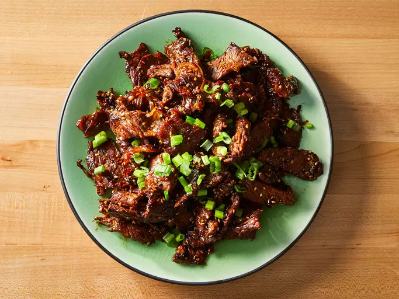

Bulgogi
Home

Description
Ingredients
- 1/2 cup soy sauce
- 2 green onions, chopped, dark green parts separated from white and light green parts
1/4 yellow onion, thinly sliced
3 tablespoons white sugar
- 3 cloves garlic, minced
- 2 tablespoons toasted sesame seeds
- 1 tablespoon sesame oil
- 1/4 teaspoon Korean red pepper flakes
- 1/4 teaspoon minced fresh ginger
- 1/8 teaspoon ground black pepper
- 1 1/2 pounds sirloin steak, cut very thin using kitchen sears
- 1 teaspoon honey, or to taste
Steps
- Gather all ingredients.
- Whisk soy sauce, white and light green parts of green onions, yellow onion, sugar, garlic, sesame seeds, sesame oil, red pepper flakes, ginger, and black pepper together in a large glass or ceramic bowl.
- Add steak slices and toss to evenly coat. Cover the bowl with plastic wrap and marinate in the refrigerator for 1 hour, or up to 1 day.
- Heat a wok or large skillet over medium heat. Working in batches, cook and stir steak and marinade together in the hot skillet, adding honey to caramelize the steak, until steak is cooked through, about 5 minutes.
- Garnish bulgogi with dark green parts of green onions.